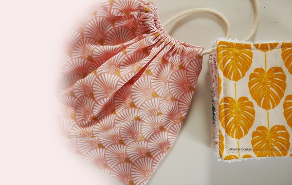
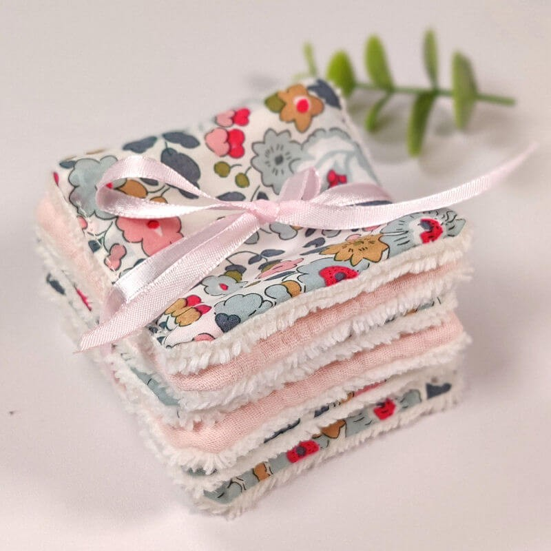
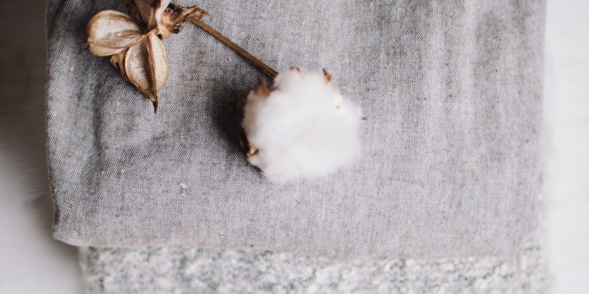

Our Products
 
The care of the skin, in the face of age, pollution and UV rays, is essential for its regeneration. Our goal is to cherish it and to attack it as little as possible by using delicate materials. Our wipes are created for you, for your skins according to your request, whether it is for a dry skin, oily with acneic tendency, we create a product which looks like you. With our products, the objective is to accompany you on a daily basis in your moment of well-being and to take care of your skin in order to preserve all its brightness.
Environment & Tissues

We have chosen to design our wipes with fabrics & ecological cotton that respects the planet as much as our skin. From French organic culture we work in close collaboration with French craftsmen who honor the knowledge and respect for nature.
Our Futur
For the future, we plan to grow with you, according to your needs and desires. Create wipes and small gifts for your loved ones, from a selection of fabrics and colors of your choice. To grow by collaborating with people who put well-being at the center of their motivations. Grow like a butterfly does... from the caterpillar ... to the chrysalis ... until it becomes a beautiful butterfly